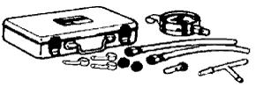
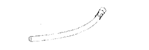

ТОПЛИВНАЯ СИСТЕМА ДВИГАТЕЛЯ > ПРОВЕРКА БЕЗ СНЯТИЯ С АВТОМОБИЛЯ > Подготовка

 | 09268-31013 | Набор для проверки производительности форсунок |
 | (09268-41120) | Тройник |
 | (09268-41500) | Разъем топливопровода |
| (90467-13001) | Зажим | |
 | (95336-08070) | Шланг |
|  | 09268-45014 | Набор для проверки давления в электронной системе впрыска топлива |
| (09268-41200) | Датчик | |
|  | (09268-41220) | Шланг |
| Градуированный цилиндр | - |
| Динамометрический ключ | - |
 | 09082-00040 | Электрический диагностический прибор TOYOTA | |
 | (09083-00150) | Комплект проводов для диагностического прибора |